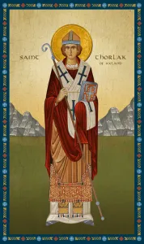

„Hoće li tko za mnom, neka se odreče samoga sebe, neka uzme svoj križ i neka ide za mnom.” (Mt 16,24)

Sveti Torlak (Thorlák Thórhallsson), rođen 1133. godine na južnom Islandu, bio je istaknuti islandski biskup i opat koji je postavio temelje crkvene discipline na otoku. Potjecao je iz plemićke, ali siromašne obitelji, a školovao se u Parizu i Lincolnu, gdje je proučavao teologiju i kanonsko pravo. Po povratku na Island odbio je tada uobičajenu praksu ženidbe svećenika, odlučivši živjeti strogo prema pravilima svetog Augustina, čime je postao uzor monaškog života u svojoj domovini.
Kao opat prvog augustinskog samostana na Islandu, a kasnije i kao biskup Skálholta, Torlak se neumorno borio protiv korupcije i simonije unutar Crkve. Među narodom je bio iznimno omiljen zbog svoje brige za siromašne, pravednosti i strpljivosti. Njegov rad na učvršćivanju kršćanskog morala i obrani crkvenih povlastica od utjecaja lokalnih moćnika učinio ga je najznačajnijom duhovnom figurom islandskog srednjovjekovlja.
Umro je 23. prosinca 1193. godine, a već pet godina kasnije proglašen je svecem na Islandu, što je 1984. godine potvrdio i papa Ivan Pavao II., proglasivši ga zaštitnikom Islanda. Njegov blagdan, poznat kao Thorláksmessa, i danas je jedan od najvažnijih dana u islandskoj tradiciji, kada se vjernici uz post i molitvu pripremaju za Božić. Sveti Torlak se danas časti ne samo na Islandu, već i diljem Skandinavije kao zaštitnik ribara i tamošnjih katolika.